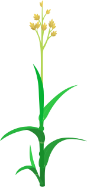
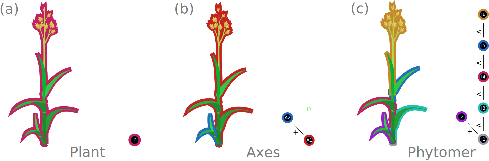
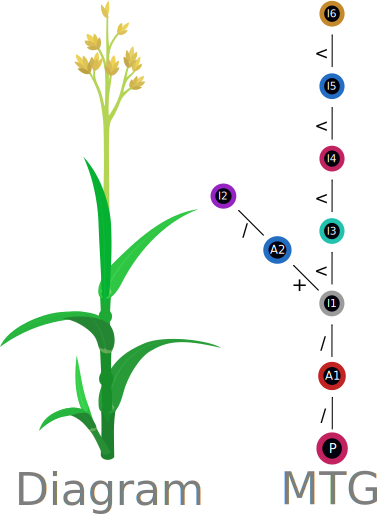

The MTG concept
Introduction
The Multi-scale Tree Graph -or MTG for short- is a data structure for describing a tree-alike object at one or several scales.
Let's take a grass plant as an example:

Fig. 1. A Typical grass plant.[1]
This plant can be described at the individual scale, as a whole (Fig. 2a). At this scale, we see some attributes such as its species, its spatial coordinates, its height, and if we measure it, its total biomass, or leaf area.
Now if we get closer to the plant we see more details, for example we can now see the dominant axes of the plant (Fig. 2b). This is a new scale of description, let's say the axis scale. We can measure new attributes at this scale such as the biomass or total leaf area of each axis for example.
If we get closer again, each axis can be described with more details, and we can now differentiate each phytomer (Fig. 2c), i.e. the compound of the leaf and the internode. This is a new scale again, and attributes can be associated to each metamer, for example its length, diameter, biomass, leaf area or volume.

Fig. 2. A grass plant described at three different scales: (a) the plant, (b) the axis and (c) the phytomer. The corresponding MTG graph (mono-scale) is shown on the right of each description.
Figure 2 shows a different graph for each scale used for the description, but we can join all scales into a single MTG instead. In the MTG, all scales live together in the same data structure. The elementary object is called a node. The nodes are denoted by the little circles in Figure 2. There is one node for the plant scale (Fig. 2a), two nodes for the axis because there are two tillers (Fig. 2b), and six nodes for the phytomers, one for each (Fig. 2c).
The resulting MTG describing all scales at once in the same graph can be represented as follows:

Fig. 3. Multi-scale Tree Graph of a grass plant described at three different scales: the plant (P), the axis (A) and the phytomer (I).
Node MTG and attributes
Each node, represented as circles in Figure 2 & 3, is described by a set of informations. These informations include the node scale, its symbol and index, its parent and the type of connection -or link- they share, a list of children and some attributes.
The scale
We already talked about the node scale above, it is defined by an integer used to describe the level of description of the object. Usually the value of the scale is 0 for the first node, and increase going towards the finer descriptions. In our example MTG, the plant would be of scale 0, the axes of scale 1 and the phytomers of scale 2.
The symbol
The symbol is used as a name for the type of nodes used in the MTG. In our example MTG in Figure 2 & 3 we had the Plant, the Axis and the Phytomer. A symbol can be present at one scale only, but several symbols can be used in the same scale.
For example we could add a finer scale of description to our example MTG: the organ scale. At this scale we would have at least three different types of organs: the leaf, the internode and the inflorescence. Each one would share the same scale (i.e. Organ -> scale 3), but would have a different name for their symbol.
The index
The index of a node is an integer with a completely free value. It is generally used by the user to e.g. keep track of the count of nodes or the branching order. In our example MTG, we incremented our phytomers one by one, but we could start our numbering for each axis for example, allowing us to keep track rapidly of how many phytomers there are in each axis.
Links
Like any other tree graph, each node in an MTG keeps track of which node is its parent, and which are its children. One originality of the MTG is having the choice of using three different types of links between a node and its parent:
- decomposition (
/): this link is used when the node decomposes its parent, meaning it has a different scale. For example in Figure 3 the first axis node (A1) decomposes the Plant node (P1). - follow (
<): it is used when a node follows its parent node with the same scale. In Figure 3, the second phytomer (I3) of the first axis (A1) follows the first one (I1). - branch (
+): the node branches from its parent. In Figure 3, the second axis (A2) branches from the first phytomer (A1) of the first axis (A1) of the plant.
Attributes
Attributes are used to attach data about a node. The MTG standard for the .mtg file format specifies that attributes can be of type integer, real or character only. But in Julia it is also possible to use any type (e.g. a DataFrame, a user type...). As soon as you don't plan to write it to the disk it is completely fine.
MultiScaleTreeGraph.jl does not check if the attributes are in the correct format when writing to disk. The user should check before writing. This is because the package allows all types for attribues, so we cannot filter on type.
- 1The SVG was made by Kelvin13 and found on Wikimedia.
{kind=link}